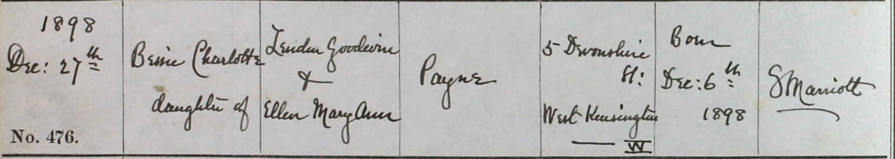
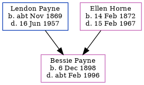

Bessie Charlotte Payne 1898 - c1996
[ Home ] | [ Calendar ] | [ Surnames Index ] | [ Family History ]A wool shop's assistant and the daughter of Lendon Payne (a postman) and Ellen Horne, Bessie Payne, the first cousin twice-removed on the father's side of <a href="I1.html">Nigel Horne</a>, was born in Hammersmith, London, England on Dec 6, 1898<span class="citation">1,2,3,4</span> and baptized in Ancoats, Manchester, England on Dec 27, 1898.</p><p>Throughout her life, Bessie lived in several places: on Newton Road, Rushden, Northamptonshire, England on Mar 31, 1901<span class="citation">1</span>; on Grange Road, Margate, Kent, England on Apr 2, 1911<span class="citation">5</span>; and in Wembley, London, England on Sep 29, 1939<span class="citation">2</span>. <p>She died <i>c.</i> Feb 1996 in Worthing, West Sussex, England<span class="citation">4</span>.
Parents
- Lendon Goodwin was born c. Nov 1869
- Ellen Mary Ann was born on Feb 14, 1872
Citations
- 1901 England, Wales & Scotland Census - Findmypast (was age 2 and a niece in the household)
- 1939 Register - Findmypast (was recorded at this address)
- England & Wales births 1837-2006 - Findmypast
- England & Wales deaths 1837-2007 - Findmypast
- 1911 Census for England & Wales - Findmypast (was age 12 and the daughter of the head of the household)
Media
Bessie Charlotte Payne - Baptism Record

1939 Register Transcription - TNA-R39-0953-0953A-008-39
1939 Register - TNA/R39/0953/0953A/008/38
England & Wales deaths 1837-2007 - BMD/D/1996/3/81548072
England & Wales births 1837-2006 - BMD/B/1898/4/AZ/000437/374
1901 England, Wales & Scotland Census - GBC/1901/0011852450
Family Tree
Generated by Ged2Site. Last updated on Jul 20, 2025